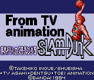

Controls
- A button: Attack
- B button: Jump
- Start: Pause
Sailor Moon S is a game where you travel through each stage as Sailor
Moon or Sailor Chibi-Moon and kill the bad guys. You will receive a sword
on the first stage completed in a land. In the second stage, you will
receive a mirror. In the third and final stage of a land, you must find a
heart shaped "locket" with a red gem inside. The special moves for each
character can be done by holding down the kick button for a longer than usual
period of time. A complete walkthrough
is available at TELE-Pathetic Industries.
When you get far enough into the third stage and have found the "locket", you
will teleport into the lair of the boss. If you are Sailor Moon, you will
become Super Sailor Moon. You will stay the same if you are Sailor Chibi-Moon.
You must kill a few regular bad guys until the boss appears. When the boss is
killed, you will have the chance to get a bonus weapon (that you can activate
by holding down the kick button for a long time) in a bonus level. -- from
starfish
Main Menu Options
- Start a new game with Sailor Moon
- Start a new game with Sailor Chibi-Moon
- Play a race/bonus/maze sort of game
- Fortune Teller
- Use a password
| Land # |
Sailor Moon Password |
Sailor Chibi-Moon Password |
| 1 - 1 |
none |
none |
| 1 - 3 |
??? |
8 0 8 0 |
| 2 - 1 |
3 6 3 3 |
6 5 0 2 |
| 2 - 2 |
??? |
6 8 0 0 |
| 2 - 3 |
??? |
8 0 8 6 |
| 2 - 3 (boss) |
??? |
0 2 8 6 |
| 3 - 1 |
4 1 4 1 |
0 4 8 6 |
| 4 - 1 |
5 1 5 1 |
8 0 8 7 |
| 5 - 1 |
6 0 6 0 |
9 1 0 0 |
| 5 - 3 |
??? |
2 4 0 0 |
| 5 - 3 (boss) |
??? |
9 6 0 0 |
| Ending |
8 8 8 8 |
7 7 7 7 |
| Sound Test |
9 9 9 9 |
![[Doraemon Nara no Suke no YABOU]](../images/GG/dora_gg.gif)
Controls
- A button: Shoot
- B button: Jump
- Start: Pause
"Nara no Suke" is a name, and YABOU means "ambition." The name is a pun
on the popular game "Nobunaga's Ambition." This is why the second "no" is
smaller than the first. This is a Mario-style, horizontal-scrolling
platform game for the Sega Game Gear. I have heard of this anime but know
very little about it.
Controls
- A button: Shoot
- B button: [not used]
- Start: Pause
This is a horizontal-scrolling shooter where you control a bat-winged boy.
The enemies you face all seem to be objects that have come alive. Fire
extinguishers will shoot balls of deadly water at you. Pencils and paper
airplanes will attack you. I don't know anything about the series, but
the game feels like a cute version of Parodius.
![[SD Gundam Winner's History]](../images/GG/gun_gg.gif) This is a war-strategy game for the Game Gear. It is based in the Gundam world where you choose which Organization
you which to side with and are given an amout of units to use aganst the enemy (computer). Combat is arcade based and
in order to last, you must capture colonies for income to make more units to overcome the enemy. -- from Phillip Yee
This is a war-strategy game for the Game Gear. It is based in the Gundam world where you choose which Organization
you which to side with and are given an amout of units to use aganst the enemy (computer). Combat is arcade based and
in order to last, you must capture colonies for income to make more units to overcome the enemy. -- from Phillip Yee

Controls
- A button: Shoot/Steal
- B button: Pass/Block
- Start: Pause
This is a basketball simulation where you can compete in a story mode, a VS CPU mode, and a VS Human mode.
Controls
- A button: Attack
- B button: Jump
- Start: Pause
This is a Mario style platform game. Beyond that, I don't know much about the anime or the game.
Controls
- A button: Attack
- B button: Jump
- Start: Pause
This is a horizontal-scrolling fighter in the style of Double Dragon. You can choose from Yusuke, Hiei, Kuwabara,
and Kurama to battle your way through the levels.
Controls
- A button: Attack
- B button: Spirit Attack
- Start: Pause
This is a unique fighting game. You face your opponent on the screen and then choose your type of attack. Once you
have chosen your attack, a target begins to move around your opponent. Pressing the button again will stop the target
showing where your attack will hit. After your opponent does the same thing, the animations for the attacks are shown
and the damage done is determined.
© 1997 - Luis A. Cruz